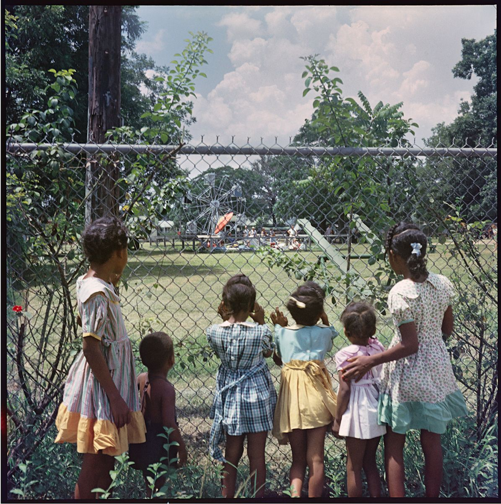
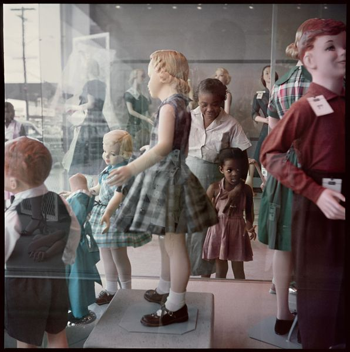

he location and setting of the film provide an important context that influences Maxson’s pursuit of the American Dream and spans back to the characters’ childhoods. Troy grew up in mostly agrarian Alabama, where families had to stick together. Survival trumped any hints at advancement, and there was little chance for any upward mobility. While Pittsburgh wasn’t easy either, being exposed to the rest of the world without racism explicitly standing in the way allowed Cory to look towards the future. “I walked on down to Mobile, hitched up with some fellows that were coming up this way. Got up here and found out, not only could you not get a job, you couldn't find no place to live” (00:58:42). Troy was stuck in the survival mindset, and thus moving North was a risky endeavor that still felt worth it. After overcoming this, he didn’t want his son to get burned. Cory was able to see what opportunities were afforded to him and saw another path forward, he wanted to take a risk that his father would never allow which bred conflict.


Since Pittsburgh is an urbanized society, there is less of a dependence on parents to see the rest of the world, opportunities are also more widely available and easier to access, for example, Cory being able to join the Marine Corps due to their recruitment office being close by. Troy had to leave Mobile, and the entire state of Alabama to find himself, but Cory can find his way easily. In addition, Pittsburgh itself was a highly industrialized city. While Blacks implicitly did face segregation at times, such policy was never explicit like in the South. This was also during the time of the industrial revolution, and the federal government had helped integrate some industrial jobs. According to Kayomi Wada, a contributor at BlackPast, “On June 25, 1941, President Franklin D. Roosevelt signed Executive Order 8802, creating a Committee on Fair Employment Practices (FEPC) to investigate complaints of discrimination and take action against valid complaints in any defense industry receiving government contracts. … In 1943, the FEPC was strengthened with Executive Order 9346 granting the FEPC more powers to take action against discrimination by the defense industry. In response, the FEPC budget was increased and a full-time staff was hired. By the end of WWII, African Americans accounted for almost eight percent of defense-industry jobs, and the number of Black Americans working for the federal government more than tripled” (Wada Paragraph 2). Overall, the context of location is integral to understanding the pursuit of the American Dream. We can see the contrast of Mobile is a place where a Black man never had any hope, versus industrialized Pittsburgh which was able to give them a chance. We also see the contrast between the ambitions of each generation, and how the location itself was able to highlight said contrasts.